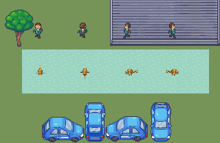

Native pond scene

All frames

Chronological strips


Independent guides

Single-tailed common goldfish. Human review pending.
Facings down, up, left, right. Body stays suspended at fixed depth; rear hides the front face. No travel or water-surface refraction.
Observations and limits · Integrity checks · Native loop · Enlarged loop
